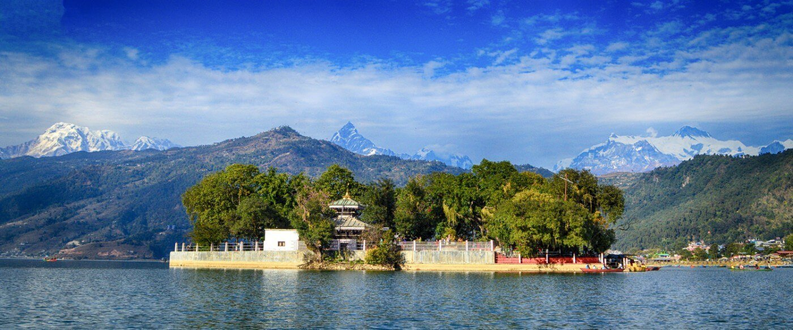
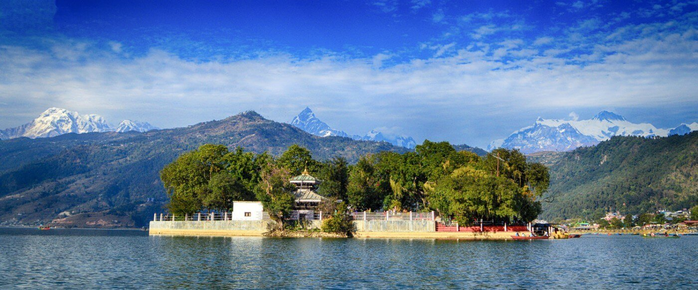
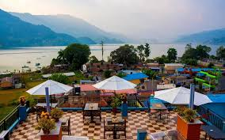
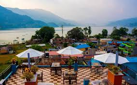

Pokhara Nepal
The city of heaven
皆さんぜひチヤンスネパールのポカラ City に行って楽しい思い出を作ってください

 



Pokhara city and hotels
ポカラは、ネパール中部のガンダキ・プラデーシュ州の州都。 カスキ郡の郡都でもある。 2017年5月、ポカラは同じポカラ盆地東方のレクナートと合併、ポカラ・レクナート副首都圏が制定され、人口はカトマンズに次ぐ国内2位。2011年の人口は26万4991人。 カトマンズから西に約200kmの、標高800m地帯に位置する。。
ポカラではきれい住みやすいホテルがたくさんありますので お客様がたくさんホテルを借りたりします。
 

pokhra ; Nepal
電話番号：977-98460-24825-
いつでも行ってください